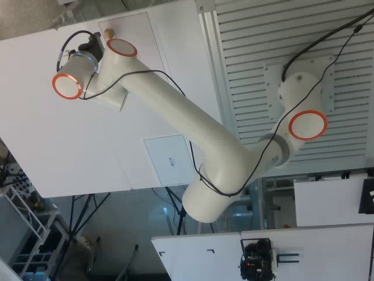

로봇 데이터 · 모방학습
FR5 모방학습
데이터 시스템
FR5의 집기·옮기기 시연을 학습 데이터로 만드는 시스템이다. 작업 조건 작성, 반복 수집, 영상·로봇 상태 기록과 데이터 검토를 연결하고, 선별한 데이터로 SmolVLA를 학습·평가한다.
시스템 구성
개발 기능
데이터 수집과
정책 학습 모듈
물체의 위치와 각도, 시작 자세를 작업 계획으로 변환한다. 반복 수집 중에는 작업별 기록 구간을 적용하고, 영상·관절·그리퍼 신호를 같은 시간 기준으로 저장한다.
수집 기록은 품질 검사와 화면 검토를 거쳐 학습 입력으로 선별한다. 학습용 데이터에서 정규화 통계를 계산하며, 정책의 오프라인 비교 결과를 관절·시연별로 살펴볼 수 있다.
주요 구성
시스템 설계시스템 아키텍처
수집·기록·데이터 관리·학습 모듈의 구성과 연결.
Collection Operator
작업 조건 작성, 반복 수집과 작업별 기록 구간.
Recorder · Curator
영상·로봇 상태 동기화, 기술 품질 검사, 데이터 검토와 선별.
Policy Learning
학습 입력 검증, TRAIN 정규화, 오프라인 정책 비교.